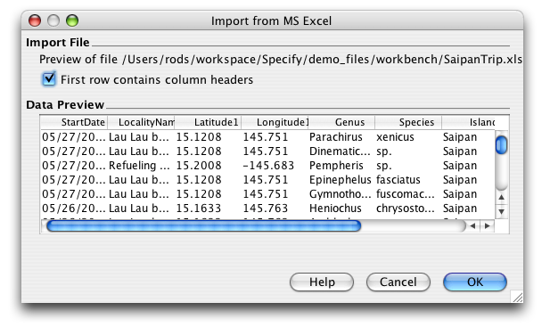
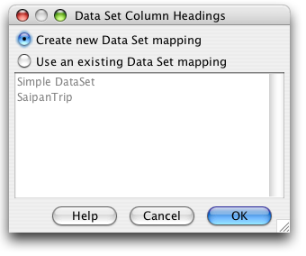
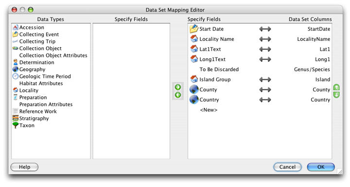
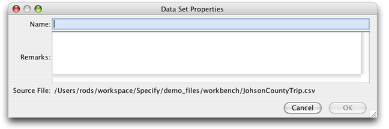
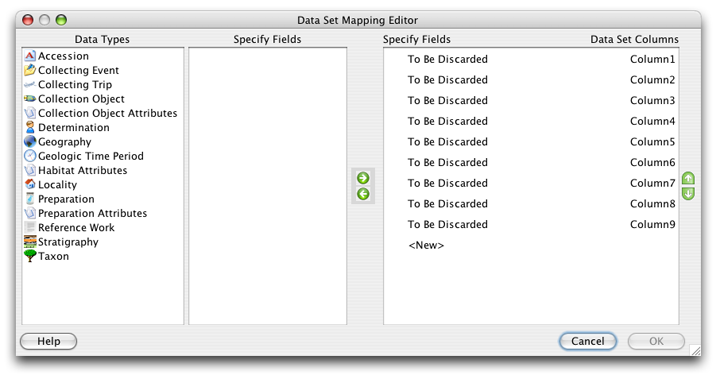
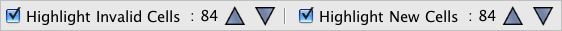
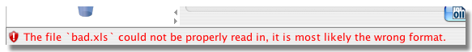

O WorkBench pode importar facilmente dados de um arquivo MS Excel para um novo conjunto de dados.
O WorkBench usa HSSF como a porta para o formato de arquivo do Microsoft Excel 97(-2003) (BIFF8) para Java, que tem capacidade de leitura e gravação. (O suporte para arquivos .xlsx do Excel 2007 está em andamento). Consulte a página do projeto HSSF para obter mais informações.
Nota:
Para começar, clique na ação Importar Dados na barra lateral e escolha o arquivo de importação na caixa de diálogo de arquivo.
Para importar corretamente os dados de um arquivo MS Excel, o WorkBench deve primeiro determinar se o os dados incluem cabeçalhos de coluna. A seguinte caixa de diálogo de informações aparecerá:

Importar do MS Excel
A janela de Visualização de dados lê e exibe uma amostra dos títulos das colunas e dados do arquivo a ser importado. Se o arquivo não contiver cabeçalhos de coluna, as colunas serão rotuladas em ordem numérica (Coluna 1, Coluna 2, etc.). Verifique a caixa 'Primeira linha contém cabeçalhos de coluna', de acordo com como o arquivo é exibido na janela Visualização de dados.
A próxima etapa no processo de importação é 'mapear' os cabeçalhos das colunas do arquivo de importação para os campos no modelo de dados Specify.
O Workbench inclui um recurso de 'mapeamento automático' que primeiro identifica os títulos das colunas e os compara com os conjuntos de dados existentes. Se os títulos das colunas do arquivo de importação corresponder aos de um conjunto de dados existente, a seguinte caixa de diálogo será aberta:

Novos títulos de coluna do conjunto de dados
Para reutilizar o 'mapa' de um conjunto de dados existente, selecione o botão 'Usar um mapeamento de conjunto de dados existente' e escolha o conjunto de dados na lista fornecida. A caixa de diálogo Propriedades do conjunto de dados abrirá em seguida, para nomear e descrever o novo conjunto de dados.
Para criar um novo mapa para o conjunto de dados, selecione o botão 'Criar novo mapeamento do conjunto de dados' e Clique OK'.
Nota: os mapeamentos só podem ser reutilizados se o arquivo XLS que está sendo importado contém o mesmo número ou menos colunas que o mapeamento. Em outras palavras, se você dividir um arquivo XLS em dois arquivos menores para importação, e ao importar o primeiro arquivo XLS não mapear todos as colunas, as colunas não mapeadas são descartadas. Ao importar o segundo arquivo XLS, você NÃO terá a opção de reutilizar o mapeamento criado para o primeiro arquivo XLS. Para reutilizar o mapeamento você deve primeiro excluir as colunas não mapeadas/descartadas do arquivo XLS antes de importá-lo para o WorkBench.
O 'auto-mapeador' então compara os títulos das colunas importadas com os campos Specify e 'mapeia' as colunas para campos correspondentes.

Cabeçalhos de coluna mapeados automaticamente no Editor de mapeamento de conjunto de dados
Os títulos das colunas do arquivo de importação aparecem em 'Colunas do conjunto de dados' no lado direito da caixa de diálogo e são mapeados para 'Campos do Specify' à esquerda.
Títulos de coluna que mapeiam para Campos Specify exibem um (linked) ícone.
Os cabeçalhos de coluna que não foram mapeados automaticamente terão o aviso 'Para ser descartado' exibido em 'Campos do Specify'. Os cabeçalhos de coluna não mapeados serão excluídos se não forem mapeados para um campo Specify antes de clicar em 'OK'.
Os botões na caixa de diálogo permitem que as colunas sejam mapeadas, não mapeadas, adicionadas, excluídas e reordenadas.
| Ícone | Nome | Resultado |
| Mapa | Adiciona o campo à lista de colunas. | |
| Não mapear | Remove o campo da lista de colunas. | |
| Reordenar acima | Move o campo selecionado para cima. | |
| Reordenar abaixo | Move o campo selecionado para cima. |
Para mapear uma coluna de conjunto de dados não mapeada para um campo Specify:
Para não mapear uma coluna de um campo:
Para adicionar uma coluna
Um ícone (link) confirma que a coluna e o campo são o mesmo título.
Nota: um campo só pode ser mapeado uma vez. Campos Specify mapeados exibirão uma marca de seleção verde ao lado de seu nome na lista, confirmando que eles estão em uso.
Nota: Ao importar informações do Taxon, use apenas Tabela de Taxon no editor de mapeamento.
Nota: A tabela Agente no editor de mapeamento só pode ser usada para informações do agente. Ao fazer upload de informações do agente junto com informações de objeto de coleção use os campos Título do Catalogador, Nome, Nome do meio e Sobrenome na Tabela de objetos de coleção.
Quando todas as Colunas estiverem mapeadas e ordenadas corretamente, clique no botão 'OK'.
Conclua o processo de importação nomeando e descrevendo o novo conjunto de dados:

Propriedades do conjunto de dados
Arquivos de importação que não contêm cabeçalhos de coluna não podem ser 'auto-mapeados' para campos do Specify. As colunas são rotuladas de acordo com sua ordem numérica e precisam ser manualmente mapeadas.

Mapa do arquivo de importação sem títulos de coluna
As colunas que não incluem títulos exibem 'A ser descartado' em vez de mapear para o Specify. Os títulos de coluna não mapeados serão excluídos se não forem mapeados para um Campo Specify antes de clicar em 'OK'.
Os botões na caixa de diálogo permitem que as colunas sejam mapeadas, não mapeadas, adicionadas, excluídas e reordenado. A função de cada botão é descrita abaixo:
| Mapear | Adiciona o campo à lista de colunas. | |
| Não mapear | Remove o campo da lista de colunas. | |
| Reordenar acima | Move o campo selecionado para cima. | |
| Reordenar abaixo | Move o campo selecionado para baixo. |
Para mapear uma coluna de conjunto de dados não mapeada para um campo Specify:
Para não mapear uma coluna de um campo:
Para adicionar uma coluna
Um ícone (link) aparecerá identificando que a coluna e o campo são o mesmo título.
Nota: um campo só pode ser mapeado uma vez. Campos do Specify que são mapeados exibem uma marca de seleção verde ao lado de seu nome na lista de campos, confirmando que eles estão em uso.
Nota: Ao importar informações de Taxon, use apenas a Tabela de Taxon no editor de mapeamento.
Nota: A tabela Agente no editor de mapeamento só pode ser usada para informações do agente. Ao carregar informações do agente junto com informações do objeto de coleção use os campos Título do Catalogador, Nome, Nome do meio e Sobrenome na Tabela de objetos de coleção.
Quando todas as colunas estiverem mapeadas e ordenadas corretamente, clique no botão 'OK'.
Conclua o processo de importação nomeando e descrevendo o novo conjunto de dados:
Propriedades do conjunto de dados
Para renomear os títulos das colunas, consulte Edição de formulário.
Nota: quando o conjunto de dados abre, a validação para campos inválidos será ativada. A validação pode ser desativada desmarcando o Destacar células inválidas no painel de validação na parte inferior do WorkBench.

Painel de validação
Arquivos do MS Excel que estão corrompidos ou não foram salvos corretamente não serão importados corretamente no WorkBench. Um arquivo inválido pode aparecer no Editor de Mapeamento com um cabeçalho parcial ou nenhum, de coluna ou exibir um aviso na parte inferior da janela do WorkBench:

Aviso de arquivo errado